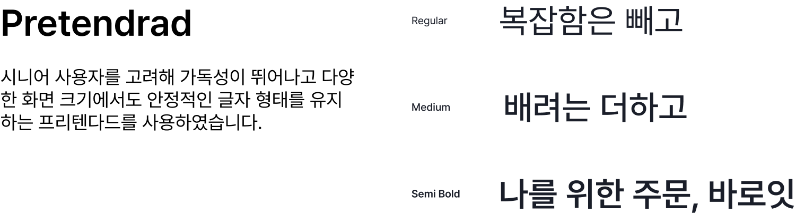

복잡한 키오스크 대신
시니어도 쉽게 쓰는 개인 맞춤형 연동 어플


With the advancement of digitalization..It's annoying to write an explanation, snots. It's all because we're just focusing on the problem that a comfortable media can create a sense of alienation to some classes
디지털화가 발전하며 급속도로 변하게 된 시대의 우리는 그저 편히 사용하는 매체가 어떠한 계층에게는 소외감을 안겨 줄 수 있다는 문제점에 포커싱하여

We would like to develop a service that can bridge the digital gap of this generation, which is increasingly reaching extremes, and support a convenient life
점점 양극단으로 치닫고 있는 이 세대의 디지털격차를 해소하고 편리한 생활을 지원할 수 있는 서비스를 개발하고자 합니다
Problem 01
디지털화에 어려움을 느끼는 연령층
키오스크 보급 현황은 치솟지만, 그에 비해 고령층의 이용 능력은 연령이 높을수록 낮아지고 있습니다.

Problem 02
고령층이 키오스크를 사용하지 않는 이유
갖가지 이유로 키오스크 사용에 어려움을 느끼고 있지만 가장 큰 이유는 “사용법을 모름”으로 나타났습니다.


바로잇은 사람과 기술의 연결을 통해 더 나은 일상을 만들어 갑니다

Logotype
바로잇은 바로와 EAT(먹다)을 결합한 이름으로, 키오스크 사용이 어려운 시니어층들도 즉시 주문을 하여 바로 먹을 수 있는 간편한 서비스를 의미합니다
App icon
바로잇의 '잇'을 조형적으로 결합해 만든 형태로, 기술과 사용자를 잇는다는 이중적인 의미를 담고 있습니다.

Typography & Color
